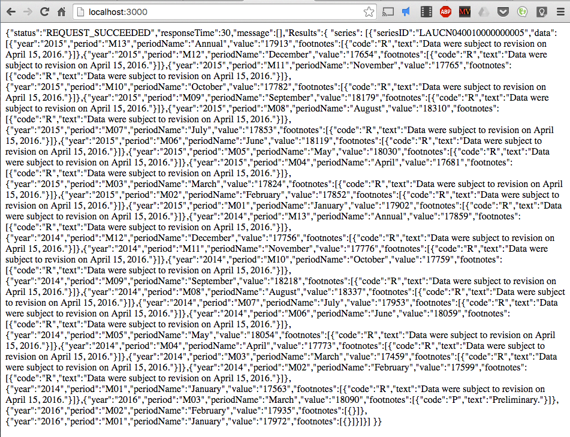

Here we will be making basic server side API calls to the BLS API. We will be using node.js, express, and express-handlebars. If you are not familiar with node, express, or express-handlebars, they are referenced here. You will need to install node.js and use the built in node package manager (npm) to install express.js, express-handlebars, express-session and body-parser(used for parsing JSON). You can do this by invoking the command npm install (packageNameHere) --save in the directory in which you want to start your project. To make this easier, you should copy the following into a file called package.json and then invoke the command npm install --save in that directory. This will automatically install all of the dependencies that you need to make basic GET and POST requests with node and express.
You will then need to copy the code below and save it into that directory. You may give it any name that you like, so long as it has a .js extension.
The final thing you will need to do is create a .handlebars file named ‘ht’ of the following format. You will need to look at the express documentation for where this goes. You should have a views folder that will contain the ht.handlebars as well as another folder inside views called layouts. There you will have a main.handlebars file which is a template for all files that are to be rendered.
You will then run the application using node (copiedFileNameFromBefore). If you go to localhost:3000 you will see the following.

Now a lot is going on here. Basically, all you need to know is that we are making a get request on line 19 the same we had shown before. When that request returns, we call an anonymous function that takes the response body that is returned and then we add it to a context object that is sent off to be rendered. The context object now has the field bls. The content of context.bls is what gets rendered in ht.handlebars.